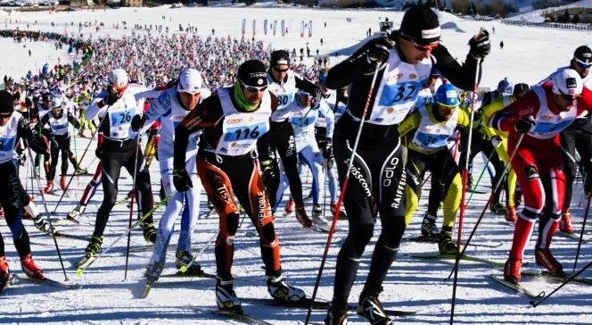
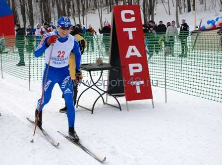
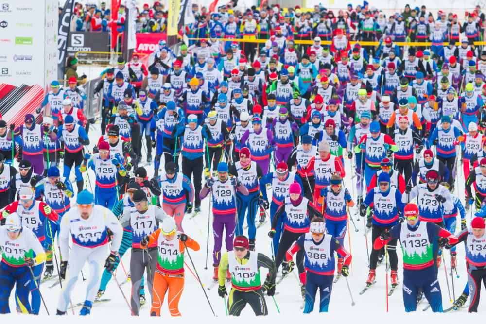
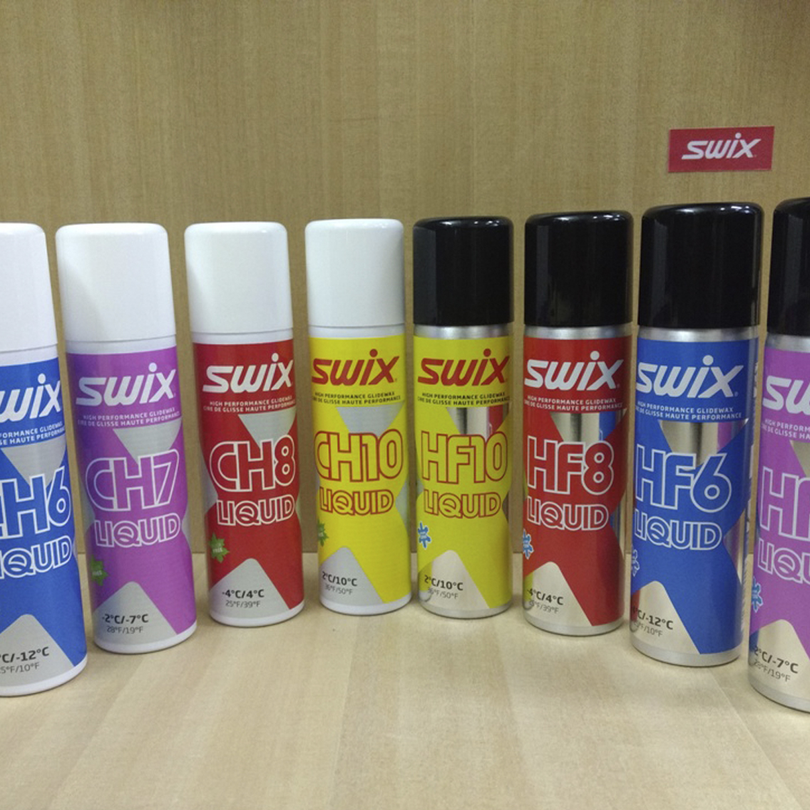
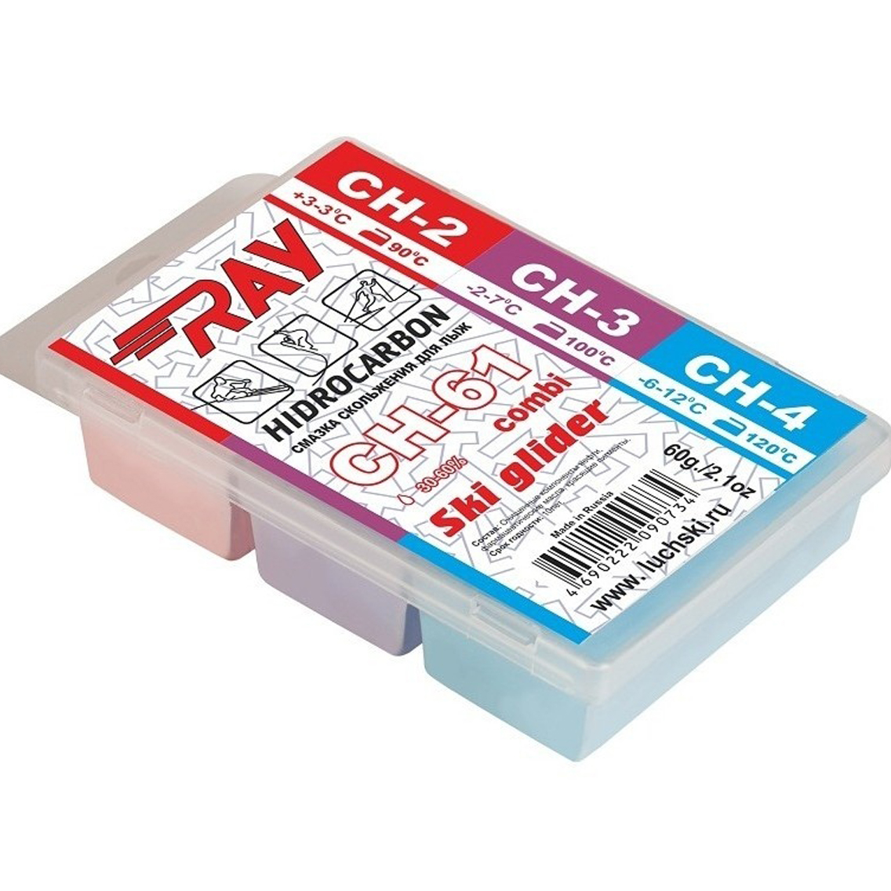
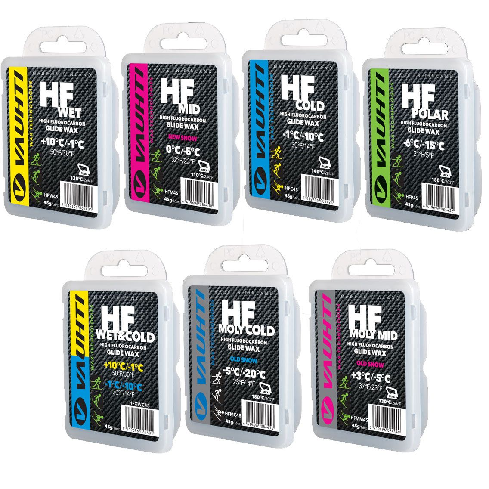
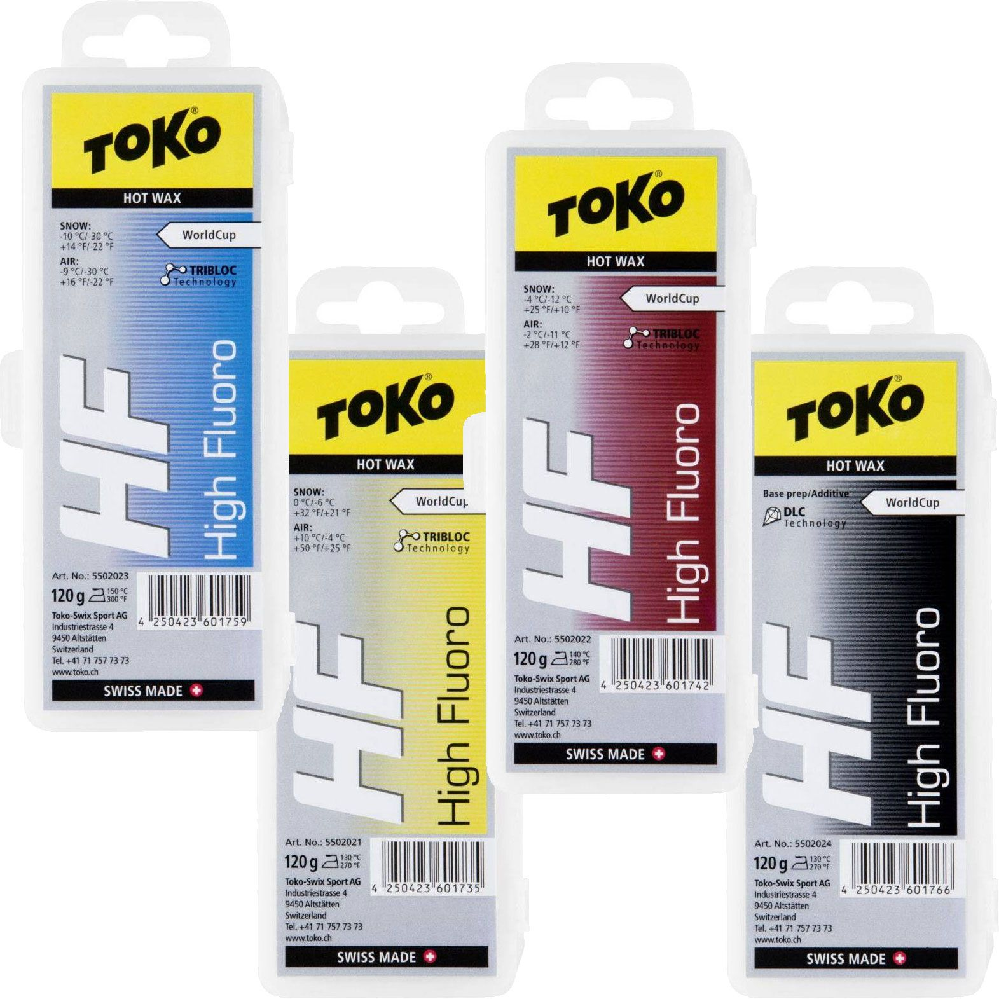
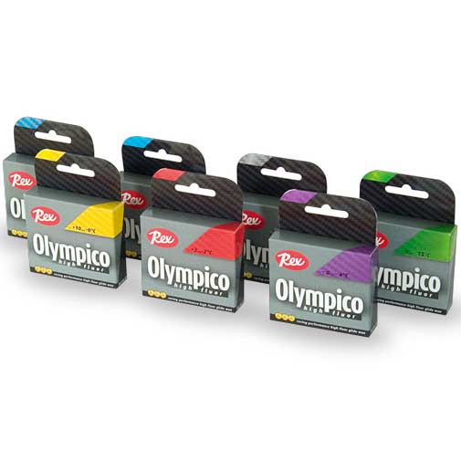
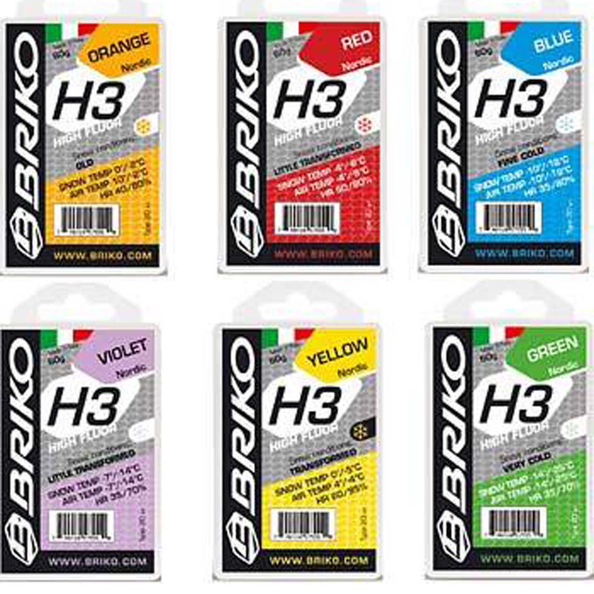

Лыжные гонки - это гонки на лыжах на определённую дистанцию по специально подготовленной трассе. Относятся к циклическим видам спорта.

Лыжный марафон
Первые состязания в лыжном беге на скорость состоялись в Норвегии в 1767 году. Затем подобные соревнования начали проводиться в Швеции и Финляндии. Позже увлечение гонками возникло и в Центральной Европе, а к началу 20 века во многих странах Европы уже
появились национальные клубы лыжных гонок. В 1924 году была создана Международная федерация лыжного спорта (FIS).
Во всем мире лыжи стали одним из самых популярных видов зимнего спорта. Нет более демократичного, доступного, столь тесно связанного с природой и так полезного для человека вида спорта.
Лыжные гонки бывают следующих видов:
Раздельный страрт

Соревнования с раздельным стартом
При раздельном старте спортсмены стартуют с определенным интервалом в определенной последовательности. Как правило, интервал составляет 30 секунд. Последовательность определяется жеребьевкой или текущим положением спортсменов в рейтинге (сильнейшие стартуют
последними). Возможен парный раздельный старт. Итоговый результат спортсмена вычисляется по формуле «финишное время» минус «стартовое время».
Соревнования с Масс-стартом
При масс-старте все спортсмены стартуют одновременно. При этом спортсмены с наилучшим рейтингом занимают наиболее хорошие места на старте. Итоговый результат совпадает с финишным временем спортсмена.

масс-старт
Мой личный опыт
На лыжах я катаюсь уже 7 лет. В этом году я вступил в сборную по лыжным гонкам Московского Политехнического университета. Благодарю тренеру я участвовал в соревнованиях. В этом году ездил на лыжный марафон В Нижнем Новгороде с раздельным стартом на 15
км.
Жидкие парафины SWIX CH SWIXFACTOR:
ОЧЕНЬ СТОЙКИЕ
• Суперэффективные жидкие парафины без фтора
• Легко и быстро наносятся на лыжи
• Долго работают
• Хорошо скользят
• Заменяют твердые парафины
• Рекомендованы для спортсменов и любителей 
Твердый парафин Ray
Рабочая температура: +3 -3°С; -2 -7 °С; -6 -12 °С.
Содержит три разных смазки, расчитанных под средние температурные диапазоны.
Серия CH Carbon - содержит полную линейку мазей для любых типов лыж, сноубордов и погодных
условий. Смазки обладают хорошими рабочими характеристиками в заданных диапазонах, не содержат
фтордобавок, и дешевле чем аналогичный импортный товар.

Серия парафинов Vauhti
HF специально разработана для лыжных гонок и продвинутых лыжников. Благодаря высокому содержанию
фторированных добавок, продукт обладает отличными водо- и грязеотталкивающими свойствами.
Продукты серии хорошо подходят для любого типа снега при влажности воздуха более 55 %, когда
снег влажный или мокрый.
Высокофторированные мази скольжения - парафины Toko HF это серия
парафинов, которые выполнены на основе технологий
Tribloc и DLC (Diamond Like Carbon) Additive. В соответствии с технологией Tribloc парафины
обеспечивают отличное скольжение, максимальное ускорение при старте. Технология DLC Additive
обеспечивает хорошие водоотталкивающие свойства парафинов, высокую устойчивость к истиранию и
загрязнению.
Серия
мазей скольжения с высоким содержанием фтора парафины Rex HF OLYMPICO
обеспечивают отличное
скольжение,особенно в условиях повышенной влажности воздуха, устойчивы к истиранию и грязи,
имеют хорошие водоотталкивающие свойства. Легко наносятся и обрабатываются, используются
самостоятельно.
"BRIKO
BRILGE SYNTHTSIS" означает синтез, при котором образуются специфические химические
мономолекулярные или бимолекулярные структуры, которые являются главной особенностью всех новых
добавок BRIKO.
В отличие от обычных смазок, которые всегда имеются в продаже, со смазками BRIKO всегда возможно
определить точную точку плавления и применения в зависимости от типа снега.